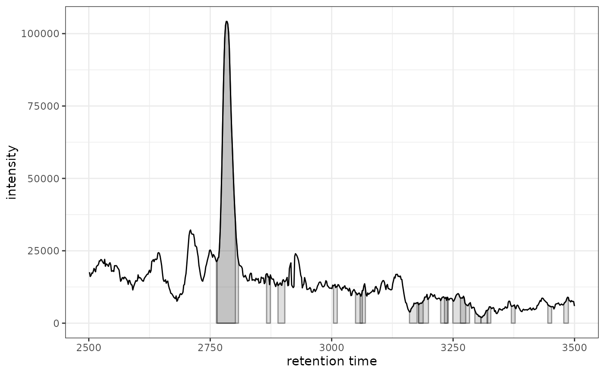

ggplot2 Version of plot for XChromatogram
Source:R/AllGenerics.R, R/gplot-LamaParama-methods.R, R/gplot-methods.R
gplot.RdCreates a ggplot2 version of a chromatogram with detected peaks marked.
This is equivalent to the base R plot() method for XChromatogram objects.
Creates a ggplot2 version of the retention time alignment model visualization for LamaParama objects. LamaParama objects contain parameters and results from landmark-based retention time alignment.
Usage
gplot(x, ...)
# S4 method for class 'LamaParama'
gplot(
x,
index = 1L,
colPoints = "#00000060",
colFit = "#00000080",
xlab = "Matched Chromatographic peaks",
ylab = "Lamas",
...
)
# S4 method for class 'XChromatogram'
gplot(
x,
col = "black",
lty = 1,
type = "l",
xlab = "retention time",
ylab = "intensity",
main = NULL,
peakType = c("polygon", "point", "rectangle", "none"),
peakCol = "#00000060",
peakBg = "#00000020",
peakPch = 1,
...
)
# S4 method for class 'XChromatograms'
gplot(
x,
col = "#00000060",
lty = 1,
type = "l",
xlab = "retention time",
ylab = "intensity",
main = NULL,
peakType = c("polygon", "point", "rectangle", "none"),
peakCol = "#00000060",
peakBg = "#00000020",
peakPch = 1,
...
)
# S4 method for class 'MChromatograms'
gplot(
x,
col = "#00000060",
lty = 1,
type = "l",
xlab = "retention time",
ylab = "intensity",
main = NULL,
peakType = c("polygon", "point", "rectangle", "none"),
peakCol = "#00000060",
peakBg = "#00000020",
peakPch = 1,
...
)Arguments
- x
A
LamaParamaobject containing retention time alignment parameters and results.- ...
Additional parameters (currently unused, for S4 compatibility).
- index
Integer specifying which retention time map to plot (default: 1).
- colPoints
Color for the matched peak points (default: semi-transparent black).
- colFit
Color for the fitted model line (default: semi-transparent black).
- xlab
X-axis label (default: "Matched Chromatographic peaks").
- ylab
Y-axis label (default: "Lamas").
- col
Color for the chromatogram line (default: "black").
- lty
Line type for chromatogram (default: 1).
- type
Plot type (default: "l" for line).
- main
Plot title (default: NULL).
- peakType
Type of peak annotation: "polygon", "point", "rectangle", or "none" (default: "polygon").
- peakCol
Color for peak markers (default: "#00000060").
- peakBg
Background color for peak markers (default: "#00000020").
- peakPch
Point character for peak markers when peakType = "point" (default: 1).
Details
This function creates a complete chromatogram plot with detected peaks
automatically marked, similar to the base R plot() method for
XChromatogram objects. If the chromatogram contains detected peaks,
they will be shown according to the peakType parameter.
This function visualizes the retention time alignment model for a specific sample. The plot shows:
Points representing matched chromatographic peaks between the sample and reference
A fitted line (loess or GAM) showing the retention time correction model
The LamaParama object contains parameters for landmark-based alignment including:
method: The fitting method ("loess" or "gam")span: Span parameter for loess fittingoutlierTolerance: Tolerance for outlier detectionzeroWeight: Weight for the (0,0) anchor pointbs: Basis function for GAM fittingrtMap: List of data frames with retention time pairs
See also
plot,XChromatogram,ANY-method for the original XCMS implementation
LamaParama for the parameter class.
Examples
# \donttest{
library(xcmsVis)
library(xcms)
library(faahKO)
library(MsExperiment)
library(ggplot2)
# Load and process example data
cdf_files <- system.file("cdf/KO/ko15.CDF", package = "faahKO")
xdata <- MsExperiment::readMsExperiment(spectraFiles = cdf_files)
xdata <- xcms::findChromPeaks(xdata, param = xcms::CentWaveParam())
# Extract chromatogram
chr <- xcms::chromatogram(xdata, mz = c(200, 210), rt = c(2500, 3500))
#> Extracting chromatographic data
#> Processing chromatographic peaks
# Plot with ggplot2
gplot(chr[1, 1])

# }
# \donttest{
library(xcmsVis)
library(xcms)
library(faahKO)
library(MsExperiment)
# Load example data
fls <- dir(system.file("cdf/KO", package = "faahKO"), full.names = TRUE)[1:3]
xdata <- readMsExperiment(fls, BPPARAM = SerialParam())
# Perform peak detection
xdata <- findChromPeaks(xdata, param = CentWaveParam(), BPPARAM = SerialParam())
xdata <- groupChromPeaks(xdata, param = PeakDensityParam(sampleGroups = rep(1, 3)))
# Get alignment parameters with landmark alignment
param <- LamaParama(tolerance = 50)
#> Error in validObject(.Object): invalid class “LamaParama” object: 'lamas' cannot be empty
# Note: LamaParama needs to be run via adjustRtime to populate rtMap
# This example shows the structure but may not run without proper setup
# Visualize the first alignment
# gplot(param, index = 1)
# }